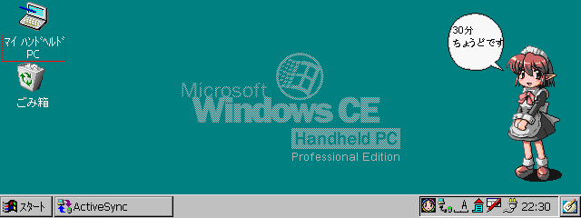
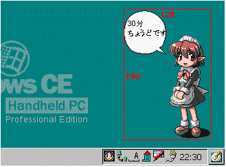
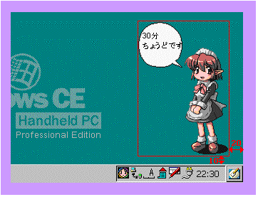

フキダシ絵 サイズは64x64ピクセル
書式： Dwidth,height,offset_x,offset_y解説
width : アニメーション全体の領域の幅 height : アニメーション全体の領域の高さ offset_x : アニメーション全体の領域の右側のマージン offset_y : アニメーション全体の領域の下側のマージン (例) D128,190,20,10
skin.txt で一回のみ指定します。
各パラメータの意味を、以下に説明します。

上図のような表示を記述する場合を考えます。
これは、次の２つの絵を表示しています。
これらを配置し、すべてのアニメーションパターンがとる領域を考えると、この場合は以下の赤枠となります。つまり、width=128、height=190となります。人物絵 サイズは64x160
例えばキャラクターが左右に歩きまわるようなアニメーションパターンがある場合は、最も右側に移動した時と左側に移動した時を含む領域のサイズとなります。ただし、あまりに領域を大きくとると、描画処理が重くなり、レスポンスの低下が発生することがあります。
また、起動時にキャラクターの描画位置を指定することが出来ます。
右側のマージンと下側のマージン(タスクバーからのマージン)が、それぞれoffset_xとoffset_yです。
この場合、offset_x=20、offset_y=10となります。